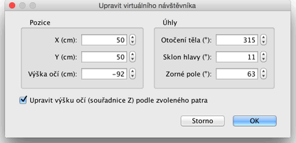
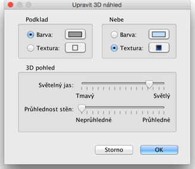

| Úprava 3D náhledu | |||
V programu lze přepínat mezi dvěma úhly pohledu ve 3D náhledu, jsou to 3D náhled > Náhled z výšky a 3D náhled > Virtuální prohlídka.
V náhledu z výšky je váš projekt v 3D náhledu zobrazován trojdimenzionálním pohledem shora.
V tomto módu pohyb myši vlevo či vpravo při stisknutém levém tlačítku myši otáčí domovem kolem vertikální osy umístěné v centru domova ; pohyb myši vpřed či vzad při stisknutém levém tlačítku otáčí domov kolem horizontální osy ; otáčení kolečka myši přibližuje či oddaluje 3D náhled. V módu Virtuální prohlídka vidíte umístění virtuálního návštěvníka taktéž na plánu. Jeho umístění a otočení je automaticky aktualizováno v plánu a 3D pohledu při každém pohybu návštěvníka. Virtuální návštěvník je ohraničen 4 indikátory.
|


|
Když je kurzor myši nad jedním z ramen návštěvníka, změní se, aby vám naznačil, že můžete chytit tento bod pro změnu otočení hlavy nebo těla návštěvníka. Dokud držíte tlačítko myši, kontextová nápověda zobrazuje hodnotu upravovaného otočení.  V tomto okně lze také nastavit zda se má výška očí (souřadnice Z) automaticky upravit podle zvoleného patra a tím pádem přepínat umístění virtuálního návštěvníka mezi patry. Zvolením 3D náhled > Upravit 3D náhled... v menu, otevřete okno ve kterém lze nastavit barvu a texturu podkladu i oblohy nebo světelný jas či průhlednost stěn.  |
|